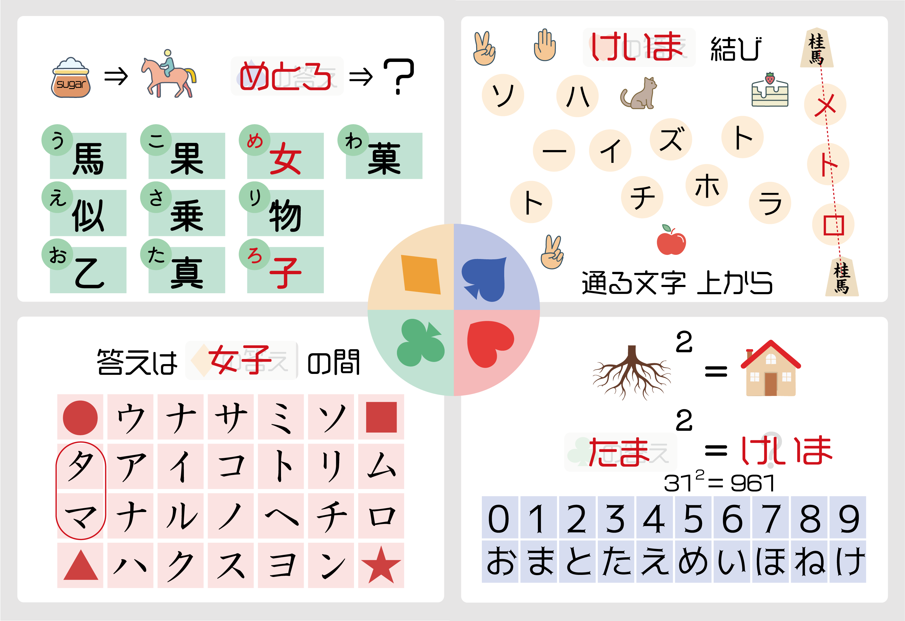

左上の謎
「さ」と「う」に書かれた漢字を読むと、乗馬になります。
♠の答え＝「め」と「ろ」に書かれた漢字を読むと、答えは女子です。
左下の謎
♦の答えを2つに分解し、その間の文字を読みます。
「女子」を表すマークを分解し、「●」と「▲」の間を読むと、答えはたまです。
右上の謎
♥の答えを見つけて、2つのイラストを線で結びます。桂馬の間を読むと、答えはメトロです。
右下の謎
「ね」の2乗＝8の2乗＝64を表に基づいてひらがなに変換すると「いえ」
♣の答え「たま」の2乗＝31×31＝961で、答えはけいまです。
